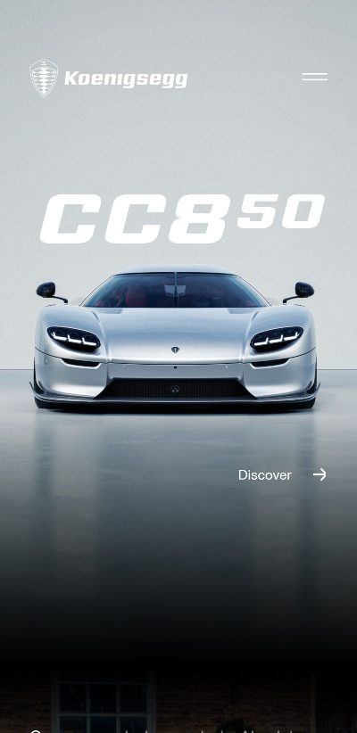
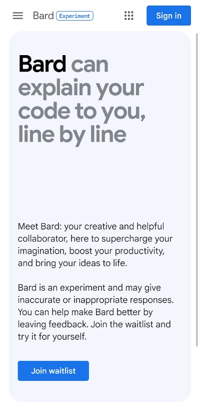

Proximity
Koenigsegg
Koenigsegg.com

Koenigsegg’s mobile site is aesthetic due to its main design
principle: proximity. Proximity defines three main areas. The first
sits at the top of the viewport and includes the company’s name and an
elegant menu icon. The eye catches this naturally as it goes from top
to bottom. The second is the center of attention: a supercar’s name in
bold letters and a picture of it right underneath. There’s a link
that’s related, right under the picture. The third is a chunk of empty
space balancing the whole. Because of proximity, the eye’s main focus
is the supercar, its name, and the link.
Visual Hierarchy
Google Bard
Bard.Google.com

Bard’s mobile site does a great job of pointing the visitor to its
service using visual hierarchy in descending order. The first thing we
catch are large, bold letters that sit at the top of the viewport.
They summarize what Bard can do for you. The eye naturally moves down
because of a chunk of whitespace underneath. This is followed by a
small-type sentence that tells more about Bard. Under that sits a
brief disclaimer on the technology. The last thing in the viewport is
the inevitable button: “Join waitlist” - the info, fonts, space, and
alignment in the viewport all point to this button.